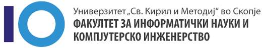
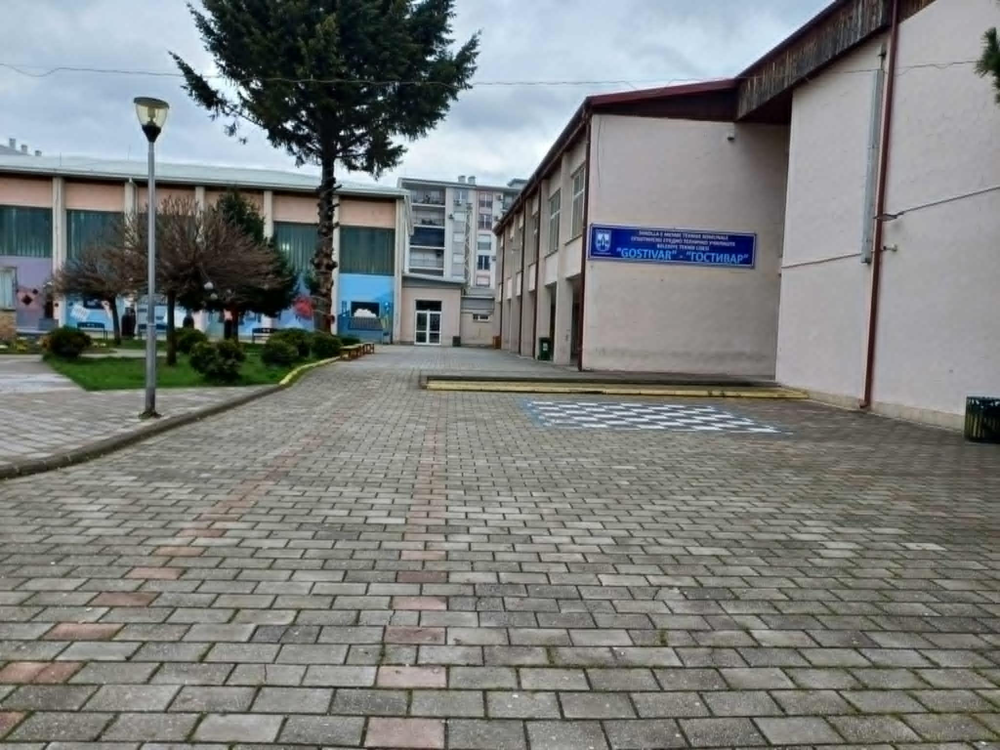

Образование
Тековно образование
Во моментот студирам на ФИНКИ – Факултет за информатички науки и компјутерско инженерство, за сега задоволен сум од факултет и планирам да продолжам и да го заваршам.
Претходно образование
Завршив средно образование во Основно-Техничко-Училиште во Гостивар, насока компјутерско инжинјерство. Тоа искуство ми даде добра основа за понатамошно студирање, и најубавите спомени во мојот живот ги имам направено во тоа училиште
